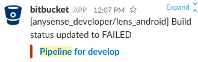

破壊したやつ誰だお

名前:Kanege
所属:AnysenseAndroidエンジニア
好きなもの:kotlinと😺と🐸
挨拶は「こっとり〜ん」
CI is 何？
つまり・・
動作環境は別々でも
検証環境を１箇所にすることで
正しく動作していることをが担保できる。
pipelines is 何
いつの間にかTestが壊れてる問題
破壊したやつ誰だお
どうすれば良かった？
個人の意識で解決できる問題なのだろうか？
人に依存するよりシステムに任せよう。
Androidだとこんな設定です!
bitbucket-pipelines.yml
image: uber/android-build-environment
pipelines:
branches:
develop://実行ブランチの指定
- step://stepの定義,
script://スクリプトの指定
- mkdir -p "$ANDROID_HOME/licenses"
- echo -e "\n8933bad161af4178b1185d1a37fbf41ea5269c55" > "$ANDROID_HOME/licenses/android-sdk-license"
- echo -e "\n84831b9409646a918e30573bab4c9c91346d8abd" > "$ANDROID_HOME/licenses/android-sdk-preview-license"
- echo y | android update sdk --no-ui -a
- touch local.properties
- ./gradlew dependencies || true
- ./gradlew test // test実行
developブランチに変更があると
pipelinesが走り
slackに通知してくれるようになる!
開始時

成功時

失敗時

異常があればすぐに気付けるので
原因の特定が用意になった!

自動化を進めて開発に集中しよう!
ご清聴ありがとうございました